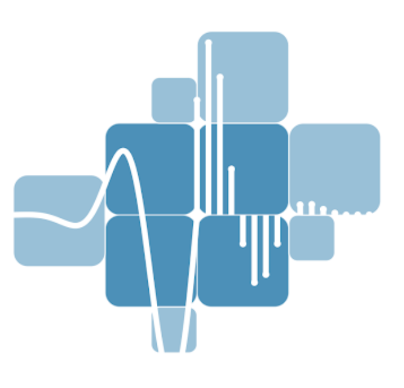

Temel kavramların etkileşimli simülasyonlarla deneyimlenmesi
teori sayfaları hazırlanmaktadır…

Sürekli zamanlı temel kavramlardan ayrık zamanlı sayısal dönüşümlere uzanan öğrenme güzergâhı.
Beş simülasyon: temel işaretler, sistem özellikleri, konvolüsyon, Fourier serileri ve Laplace dönüşümü.
Beş simülasyon: ayrık zaman konvolüsyonu, örnekleme, DTFT, DFT/FFT ve Z-dönüşümü.
Altı uygulamalı simülasyon: genlik modülasyonu, zaman–frekans çözümlemesi, sıkıştırma, EMD, Doppler radar ve Fraksiyonel Fourier dönüşümü.
Her kart bir simülasyona bağlanmaktadır; parametre değişiklikleri sonuçlara doğrudan yansıtılmaktadır.
Birim impuls $\delta(t)$, birim basamak $u(t)$, üstel $e^{at}$ ve sinüzoidal $\cos(\Omega t)$ gibi temel yapı taşları incelenmektedir. Etkileşimli sinyal kütüphanesi üzerinden parametreler değiştirildiğinde sonuçların gerçek zamanlı olarak gözlemlenmesi sağlanmaktadır.
SİM 02Doğrusallık, zamanla değişmezlik, nedensellik, kararlılık ve bellek özellikleri LTI sistem çerçevesinde ele alınmaktadır. Kullanıcı tarafından tanımlanan $T\{x(t)\}$ ifadesi üzerinde beş temel sistem özelliği doğrudan sınanabilmektedir.
SİM 03$y(t)=\int x(\tau)h(t-\tau)\,d\tau$ tanımıyla sürekli zaman LTI sistem çıkışı hesaplanmaktadır. Kayma, çakışma bölgesi ve sonuç eğrisi etkileşimli biçimde adım adım izlenebilmektedir.
SİM 04Periyodik sinyallerin $\Omega_0, 2\Omega_0, \ldots$ harmonik bileşenlerine ayrıştırılması incelenmektedir. Kare, üçgen ve testere dalgalarının Fourier serisi açılımı kullanılarak yeniden inşası gösterilmektedir.
SİM 05$X(s)=\int x(t)\,e^{-st}\,dt$ ile tanımlanan Laplace dönüşümü $s$-düzleminde üç boyutlu yüzey olarak görselleştirilmektedir. Kutup–sıfır yerleşimi ve $j\Omega$ ekseni üzerindeki Fourier ilişkisi birlikte incelenebilmektedir.
$y[n]=\sum_k x[k]\,h[n-k]$ ifadesi üzerinden ayrık zaman LTI sistem çıkışı hesaplanmaktadır. Kaydırıcı yardımıyla çakışma bölgesi ve çarpım–toplam işlemi adım adım izlenebilmektedir.
SİM 07$x_s(t)=x(t)\cdot p(t)$ örnekleme bağıntısı incelenmektedir: zaman düzleminde Dirac dizisiyle çarpım, frekans düzleminde aynı dizinin konvolüsyonuna karşılık gelir ve spektrum $F_s$ periyoduyla tekrarlanır. Nyquist koşulu ihlal edildiğinde örtüşme (aliasing) etkileşimli olarak vurgulanmaktadır.
SİM 08$X(e^{j\omega})=\sum_n x[n]\,e^{-j\omega n}$ ile tanımlanan DTFT'nin $\omega$ ekseni üzerindeki sürekli ve $2\pi$-periyodik yapısı görselleştirilmektedir. Birim çember ile genlik ve faz panelleri senkron imleç üzerinden birlikte incelenebilmektedir.
SİM 09$X[k]=\sum_n x[n]\,e^{-j2\pi kn/N}$ ile DTFT'nin $\omega_k=2\pi k/N$ noktalarındaki örneklenmiş hali hesaplanmaktadır. Pencere fonksiyonu seçimi, sıfır doldurma, spektral sızıntı ve $\mathcal{O}(N^2)$ ile $\mathcal{O}(N\log N)$ karmaşıklıkların başarımı karşılaştırılabilmektedir.
SİM 10$X(z)=\sum_n x[n]\,z^{-n}$ ile Z-dönüşümü $z$-düzleminde üç boyutlu yüzey olarak gösterilmektedir. Yakınsama bölgesi (ROC), kutup–sıfır yerleşimi ve birim çember üzerindeki DTFT ilişkisi birlikte ele alınmaktadır.
Birden çok ses kanalı farklı taşıyıcı frekanslarında modüle edilmekte; alıcı tarafında yerel osilatör ve alçak geçiren süzgeç (LPF) kullanılarak hedef kanal yeniden elde edilmektedir. AM/FM/QAM/OFDM yöntemlerinin temel çalışma ilkesi bu çatı altında ele alınmaktadır.
SİM 12Kısa Zamanlı Fourier Dönüşümü (STFT) tabanlı iki boyutlu spektrum akışı (waterfall) sunulmaktadır. Sekiz farklı pencere fonksiyonu (Hann, Hamming, Blackman, Nuttall, Flat-top vb.) ve %0–%90 örtüşme oranı parametrik olarak ayarlanabilmektedir.
SİM 13Ayrık Kosinüs Dönüşümü (DCT) ile sinyal sıkıştırma incelenmektedir. Baskın katsayılar korunup düşük enerjili katsayılar elendiğinde geri-inşa edilen sinyalin orijinale yakınlığı ölçülmektedir. JPEG sıkıştırmasının temel matematiksel çekirdeğini oluşturmaktadır.
SİM 14Ampirik Mod Ayrıştırması (EMD) ile sinyal İçsel Kip Fonksiyonlarına (IMF) ayrıştırılmakta; ardından Hilbert dönüşümü uygulanarak anlık frekans ve enerji yoğunluğu hesaplanmaktadır. Doğrusal-olmayan ve durağan-olmayan sinyallerin çözümlenmesinde kullanılan bir yöntemdir.
SİM 15Kuş bakışı sahnede hareketli hedef yönlendirilmekte; radar darbe dizisi iletilip eko sinyali alınmakta ve eko üzerindeki Doppler kayması $f_d$ ölçülmektedir. SNR (−15…+9 dB ve ∞), düzensiz yansıma (clutter), MTI süzgeci, FFT spektrumu ve zaman–hız şelalesi etkileşimli biçimde incelenebilmektedir.
SİM 16İnce mercek optik analojisi temel alınmaktadır: kullanıcı tarafından çizilen desen, $\alpha=z/f$ parametresine bağlı olarak giriş, ara ve odak düzlemlerinde art arda Fraksiyonel Fourier Dönüşümleri (FrFT) ile dönüştürülmektedir. Tek boyutlu sinyal kütüphanesi, chirp üretimi, serbest çizim ve ses dosyası yükleme desteklenmekte; $\alpha$ kaydırıcısı ile $\mathrm{Re}/\mathrm{Im}/|\cdot|$ bileşenleri ve kartezyen $t$–$\Omega$ düzlemindeki dönüş gözlemlenebilmektedir.
Listelenen simülasyonlara doğrudan erişim sağlanmaktadır.